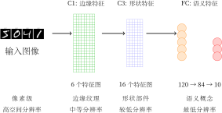
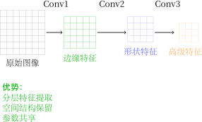

MNIST 数字识别：从全连接网络到卷积神经网络
2025 年 10 月 18 日
本文深入探讨了 MNIST 手写数字识别任务中的两种主要神经网络架构：经典全连接神经网络（Fully Connected Networks）和卷积神经网络（Convolutional Neural Networks, CNN） 。文章首先系统介绍了神经网络训练的基础 概念和术语，包括损失函数、优化算法、过拟合与正则化技术等核心内容。通过详细分析 LeNet 架构，我们展示了如何将卷积层用于特征提取，以及如何将全连接层用于分类。文章包含完整的数学推导、PyTorch 实现代码，并深入 对比了两种架构的优缺点。此外，我们还探讨了神经网络中的缩放定律，为理解现代深度学习的发展提供了理论基础。
目录
1 引言
1.1 MNIST 数据集简介
MNIST（Modified National Institute of Standards and Technology）数据集是机器学习领域最经典的数据集之一，由 Yann LeCun 等人创建。该数据集包含：
-
‧ 训练集：60,000 张手写数字图像
-
‧ 测试集：10,000 张手写数字图像
-
‧ 图像尺寸：28×28 像素，灰度图像
-
‧ 类别：0‑9 共 10 个数字类别

MNIST 数据集之所以成为“Hello World”级别的基准测试，是因为：
-
1. 规模适中 ：足够大以展示机器学习的效果，又足够小以便快速实验
-
2. 预处理完善 ：图像已经过标准化处理，可直接用于训练
-
3. 评估标准明确 ：分类准确率的计算简单直观
-
4. 历史意义 ：见证了从传统机器学习到深度学习的发展历程
1.2 LeNet 的历史意义
LeNet 由 Yann LeCun 在 1989 年提出 [2]，是最早的卷积神经网络之一。其历史意义在于：
-
‧ 开创性 ：首次将卷积操作引入神经网络
-
‧ 实用性 ：成功应用于银行支票的手写数字识别
-
‧ 理论基础 ：奠定了现代 CNN 架构的基础
-
‧ 持久影响 ：其设计思想至今仍在使用
2 神经网络训练基础
2.1 基本训练术语
在深入探讨神经网络架构之前，我们需要明确一些基本的训练概念和术语：
核心训练术语
-
‧ Epoch（轮次）：完整遍历整个训练数据集一次的过程
-
‧ Batch（批次）：一次训练迭代中使用的样本集合
-
‧ Batch Size（批大小）：每个批次中的样本数量，影响训练稳定性和内存使用
-
‧ Iteration（迭代）：完成一个批次的训练步骤
-
‧ Learning Rate（学习率）：控制模型参数更新步长的超参数
-
‧ Loss Function（损失函数）：衡量模型预测与真实标签差异的函数
2.2 损失函数的选择
损失函数是神经网络训练的核心，不同的任务需要不同的损失函数：
| 任务类型 | 损失函数 | 数学表达式 |
| 回归任务 | 均方误差（MSE） | \(\displaystyle \frac {1}{n}\sum _{i=1}^n (y_i - \hat {y}_i)^2\) |
| 分类任务 | 交叉熵损失 | \(\displaystyle -\sum _{i=1}^n y_i \log (\hat {y}_i)\) |
| 二分类任务 | 二元交叉熵 | \(\displaystyle -\frac {1}{n}\sum _{i=1}^n [y_i \log (\hat {y}_i) + (1-y_i)\log (1-\hat {y}_i)]\) |
MNIST 分类的损失函数
对于 MNIST 手写数字识别这样的 10 类分类任务，我们使用 分类交叉熵损失函数 ：
\(\seteqnumber{0}{}{0}\)\begin{equation} \mathcal {L} = -\sum _{c=1}^{10} y_c \log (p_c) \end{equation}
其中：
-
‧ \(y_c\)：真实标签的 one‑hot 编码（0 或 1）
-
‧ \(p_c\)：模型预测属于类别\(c\) 的概率
-
‧ 求和遍历所有 10 个数字类别
为什么选择交叉熵而不是 MSE？ 交叉熵对概率分布的差异更敏感，且在分类任务中梯度更稳定。
2.3 训练过程与验证
2.3.1 训练集与测试集的划分
在机器学习中，我们将数据划分为不同的集合：
-
‧ 训练集（Training Set）：用于模型参数的学习
-
‧ 验证集（Validation Set）：用于超参数调优和模型选择
-
‧ 测试集（Test Set）：用于最终模型性能评估
数据划分的重要性
-
‧ 避免过拟合：确保模型在未见过的数据上表现良好
-
‧ 公平评估：测试集只能在最终评估时使用一次
-
‧ 模型选择：验证集帮助我们选择最佳超参数
2.3.2 训练过程的监控
有效的训练需要监控多个指标：
关键监控指标
-
‧ 训练损失 ：模型在训练集上的表现，应该逐渐下降
-
‧ 验证损失 ：模型在验证集上的表现，反映泛化能力
-
‧ 训练准确率 ：模型在训练集上的分类正确率
-
‧ 验证准确率 ：模型在验证集上的分类正确率
2.4 过拟合与欠拟合
2.4.1 欠拟合（Underfitting）
当模型过于简单，无法捕捉数据中的基本模式时发生：
-
‧ 训练损失和验证损失都很高
-
‧ 模型在训练集上表现不佳
-
‧ 解决方法：增加模型复杂度、减少正则化、训练更长时间
2.4.2 过拟合（Overfitting）
想象你在学习一门新课程：
-
‧ 正常学习 ：理解基本概念，能够解决类似问题
-
‧ 死记硬背 ：记住所有例题，但遇到新题型就不会
当模型过于复杂，记忆了训练数据中的噪声而非真实模式时发生：
-
‧ 训练损失很低，但验证损失很高
-
‧ 模型在训练集上表现很好，但在新数据上表现差
-
‧ 解决方法：增加训练数据、使用正则化、早停法、降低模型复杂度

有点牵强的总结：
学而不思则过拟合，思而不学则欠拟合。
2.5 正则化技术：防止过拟合的实用方法
2.5.1 什么是正则化？
在神经网络中，正则化就是帮助我们训练出“聪明”而不是“死记硬背”的模型的技术。

2.5.2 L1 和 L2 正则化：最简单的正则化方法
核心思想： 让模型的权重不要变得太大
正则化通过在原始损失函数中添加参数惩罚项来实现：
L1 正则化（Lasso 回归）
\begin{equation} \mathcal {L}_{\text {total}} = \mathcal {L}_{\text {original}} + \lambda \sum _{i=1}^{n} |w_i| \end{equation}
特点：
-
‧ 产生稀疏解，许多参数会变为 0
-
‧ 具有特征选择功能，自动选择重要特征
-
‧ 对异常值相对鲁棒
-
‧ 不可导，需要特殊优化方法
L2 正则化（Ridge 回归）
\begin{equation} \mathcal {L}_{\text {total}} = \mathcal {L}_{\text {original}} + \frac {\lambda }{2} \sum _{i=1}^{n} w_i^2 \end{equation}
特点：
-
‧ 参数趋向于小而非零的值
-
‧ 数学处理更简单，可导
-
‧ 对异常值敏感
-
‧ 是最常用的正则化形式
类比
想象你在调音：
-
‧ L1 正则化 ：直接告诉某些旋钮“完全不要动”（变成 0）
-
‧ L2 正则化 ：告诉所有旋钮“不要调得太大”（保持小值）
为什么有效？
-
‧ 权重太大 → 模型过于敏感 → 容易记住训练数据
-
‧ 权重较小 → 模型更加平滑 → 能够泛化到新数据
-
‧ 就像用粗笔画画，不会画出过于复杂的细节
PyTorch 中的 L2 正则化
在 PyTorch 中，L2 正则化被称为“权重衰减”（weight decay）：
1 optimizer = torch . optim.Adam( 2 model.parameters () , 3 lr =0.001, 4 weight_decay =0.0001 # 正则化L2 5 )
实践建议： 从 0.0001 开始尝试，根据验证效果调整
2.5.3 Dropout：随机“失忆”技术
核心思想： 训练时随机让一些神经元“罢工”，迫使网络学习冗余的特征

直观的理解
训练阶段： “同学们，今天随机抽一半同学回答问题，其他人休息”
-
‧ 每个人都要准备好，因为不知道会不会被抽到
-
‧ 不能依赖某个“学霸”同学，必须自己理解
测试阶段： “现在全班一起回答问题，把大家的答案平均一下”
-
‧ 相当于多个“子班级”的集体智慧
-
‧ 结果更加稳定可靠
Dropout 的 PyTorch 实现
1 class SimpleNet(nn.Module): 2 def __init__ ( self ) : 3 super(SimpleNet , self ) . __init__ () 4 self . fc1 = nn. Linear (784, 256) 5 self . dropout = nn.Dropout (0.5) # 的50%率dropout 6 self . fc2 = nn. Linear (256, 10) 7 8 def forward ( self , x) : 9 x = F. relu ( self . fc1 (x) ) 10 x = self . dropout (x) # 只在训练时随机“丢弃” 11 x = self . fc2 (x) 12 return x
参数选择：
-
‧ 输入层：通常不用 dropout（0%）
-
‧ 隐藏层：0.3‑0.5（30%‑50%）
-
‧ 输出层：不用 dropout
2.5.4 早停法：聪明的“刹车”技术
核心思想： 看到验证效果开始变差时就停止训练

什么时候该停止？
-
‧ 验证损失连续几个 epoch 没有改善
-
‧ 验证准确率开始下降
-
‧ 训练损失还在下降，但验证损失开始上升
就像考试前： 发现模拟考试成绩开始下降，就应该停止“熬夜突击”，保持当前水平
2.5.5 数据增强：免费的“新数据”
核心思想： 通过对现有数据进行合理变换，创造“新”的训练样本
MNIST 数据增强实例
原始图像：手写数字“3”
-
‧ 轻微旋转： 顺时针转 5 度，还是“3”
-
‧ 平移： 向左移动 2 像素，还是“3”
-
‧ 轻微缩放： 放大到 1.1 倍，还是“3”
-
‧ 加噪声： 加一点“雪花点”，还是“3”
数据增强的注意事项
-
‧ 保持类别不变： 增强后的数据应该还是同一个数字
-
‧ 避免过度增强： 不要把“6”转得看起来像“9”
-
‧ 任务相关： 手写数字识别不需要颜色变换
-
‧ 渐进式： 从轻微变换开始，逐步增加强度
PyTorch 中的 MNIST 数据增强
1 from torchvision import transforms 2 3 # 定义数据增强变换 4 train_transform = transforms . Compose([ 5 transforms . RandomRotation(10) , # 随机旋转度±10 6 transforms . RandomAffine(0, translate =(0.1, 0.1) ) , # 随机平移10% 7 transforms . ToTensor () , 8 transforms . Normalize ((0.1307,) , (0.3081,) ) # 数据的标准化MNIST 9 ]) 10 11 # 应用到训练数据 12 train_dataset = MNIST(root=' ./ data ' , train =True, 13 transform= train_transform , download=True)
2.5.6 如何选择正则化方法？
| 方法 | 什么时候用 |
| L2 正则化 | 几乎所有情况 |
| Dropout | 深层网络，参数量大 |
| 早停法 | 总是使用 |
| 数据增强 | 图像、语音等数据 |
| L1 正则化 | 需要特征选择时 |
初学者建议（从简单到复杂）
-
1. 第一步： 只用早停法（最简单，零成本）
-
2. 第二步： 加上 L2 正则化（weight_decay=0.0001）
-
3. 第三步： 在隐藏层加 Dropout（0.3‑0.5）
-
4. 第四步： 尝试数据增强（如果适用）
-
5. 高级： 组合多种方法，交叉验证调参
2.6 批量大小与学习率调度
2.6.1 批量大小的影响
不同的批量大小对训练有不同影响：
| 批量大小 | 优点 | 缺点 |
| 小批量（如 32） | 泛化性好，内存需求低 | 训练不稳定，梯度噪声大 |
| 大批量（如 256） | 训练稳定，并行度高 | 内存需求大，可能陷入局部最优 |
| 全批量（所有数据） | 梯度准确，收敛稳定 | 内存需求极大，不适合大数据集 |
2.6.2 学习率调度
学习率不必固定不变，可以采用不同的调度策略：
常见学习率调度策略
-
‧ 步长衰减 ：每隔一定轮次将学习率乘以固定因子
-
‧ 指数衰减 ：学习率按指数函数逐渐减小
-
‧ 余弦退火 ：学习率按余弦函数周期性变化
-
‧ 自适应方法 ：根据训练进展自动调整学习率
2.7 评价指标
对于分类任务，我们需要多个评价指标来全面评估模型性能：
分类任务的核心指标
-
‧ 准确率（Accuracy）：正确预测的样本比例
\[\text {Accuracy} = \frac {\text {正确预测数}}{\text {总预测数}}\]
-
‧ 精确率（Precision）：预测为正类中真正为正类的比例
\[\text {Precision} = \frac {TP}{TP + FP}\]
-
‧ 召回率（Recall）：真正为正类中被正确预测的比例
\[\text {Recall} = \frac {TP}{TP + FN}\]
-
‧ F1 分数 ：精确率和召回率的调和平均
\[\text {F1} = 2 \times \frac {\text {Precision} \times \text {Recall}}{\text {Precision} + \text {Recall}}\]
MNIST 评价指标选择
对于 MNIST 这样的平衡多分类任务， 准确率 是最直观和常用的指标，因为：
-
‧ 10 个类别的样本数量大致相等
-
‧ 每个类别的重要性相同
-
‧ 易于理解和解释
3 经典神经网络：全连接层
3.1 全连接层的基本原理
全连接层（Fully Connected Layer），也称为线性层或密集层，是神经网络中最基本的构建块。其核心思想是每个输入节点都与每个输出节点相连接。

全连接层的数学表达
对于输入向量 \(\mathbf {x} \in \mathbb {R}^n\) 和输出向量 \(\mathbf {y} \in \mathbb {R}^m\)，全连接层的变换为：
\(\seteqnumber{0}{}{3}\)\begin{equation} \mathbf {y} = \mathbf {W}\mathbf {x} + \mathbf {b} \end{equation}
其中 \(\mathbf {W} \in \mathbb {R}^{m \times n}\) 是权重矩阵，\(\mathbf {b} \in \mathbb {R}^m\) 是偏置向量。
3.2 参数数量分析
对于从 \(n\) 维到 \(m\) 维的全连接层，参数总数为：
\(\seteqnumber{0}{}{4}\)\begin{equation} \text {Parameters} = m \times n + m = m(n + 1) \end{equation}
以 MNIST 为例，如果将 28×28=784 像素的图像直接输入到全连接层：
-
‧ 第一层：假设有 256 个神经元，参数数量为 \(256 \times 784 + 256 = 200,960\)
-
‧ 第二层：从 256 到 128 个神经元，参数数量为 \(128 \times 256 + 128 = 32,896\)
-
‧ 输出层：从 128 到 10 个类别，参数数量为 \(10 \times 128 + 10 = 1,290\)
总参数数量： 235,146 个参数
3.3 PyTorch 实现
1 import torch
2 import torch . nn as nn
3 import torch . nn. functional as F
4
5 class FullyConnectedNet ( nn.Module):
6 def __init__ ( self , input_size =784, hidden_size =256, num_classes =10) :
7 super( FullyConnectedNet , self ) . __init__ ()
8 # 将28图像展平为维向量x28784
9 self . flatten = nn. Flatten ()
10
11 # 全连接层堆叠
12 self . fc1 = nn. Linear ( input_size , hidden_size )
13 self . fc2 = nn. Linear ( hidden_size , hidden_size // 2)
14 self . fc3 = nn. Linear ( hidden_size // 2, num_classes )
15
16 # 层用于防止过拟合Dropout
17 self . dropout = nn.Dropout (0.5)
18
19 def forward ( self , x) :
20 # 展平输入
21 x = self . flatten (x)
22
23 # 第一层：784 −> 256
24 x = self . fc1 (x)
25 x = F. relu (x)
26 x = self . dropout (x)
27
28 # 第二层：256 −> 128
29 x = self . fc2 (x)
30 x = F. relu (x)
31 x = self . dropout (x)
32
33 # 输出层：128 −> 10
34 x = self . fc3 (x)
35
36 return x
37
38 # 模型实例化
39 model = FullyConnectedNet ()
40 print (“模型总参数数量f : {sum(p.numel() for p in model.parameters () )” :,})
3.4 全连接层的优缺点
| 优点 | 缺点 |
| 实现简单直观 | 忽略空间结构信息 |
| 理论成熟完善 | 参数数量巨大 |
| 易于理解和调试 | 容易过拟合 |
| 计算效率高（小模型） | 对平移不具备鲁棒性 |
| 适用于非结构化数据 | 需要大量训练数据 |
4 卷积神经网络：CNN
4.1 卷积操作的基本原理
卷积操作是 CNN 的核心，它通过滑动窗口的方式在输入图像上应用滤波器（卷积核）来提取特征。这种思想最早由 LeCun 等人 [2] 在 1989 年提出，并在后续的 LeNet‑5 [1] 工作中得到完善。

卷积操作的数学定义
\begin{equation} (f * g)[m,n] = \sum _{i=-\infty }^{\infty }\sum _{j=-\infty }^{\infty } f[i,j] \cdot g[m-i, n-j] \end{equation}
在离散图像处理中，卷积操作可以表示为：
\(\seteqnumber{0}{}{6}\)\begin{equation} Y[i,j] = \sum _{u=0}^{k-1}\sum _{v=0}^{k-1} X[i+u, j+v] \cdot K[u,v] + b \end{equation}
其中：
-
‧ \(X\)：输入特征图
-
‧ \(K\)：卷积核（滤波器）
-
‧ \(b\)：偏置项
-
‧ \(k\)：卷积核大小
4.2 特征图尺寸计算
对于输入尺寸为 \(W \times H\)，卷积核大小为 \(K \times K\)，步长为 \(S\)，填充为 \(P\) 的情况，输出特征图的尺寸为：
\(\seteqnumber{0}{}{7}\)\begin{equation} W_{out} = \left \lfloor \frac {W - K + 2P}{S} \right \rfloor + 1 \end{equation}
\(\seteqnumber{0}{}{8}\)\begin{equation} H_{out} = \left \lfloor \frac {H - K + 2P}{S} \right \rfloor + 1 \end{equation}
MNIST 实例计算
对于 28×28 的 MNIST 图像，使用 3×3 卷积核，步长 S=1，填充 P=1：
-
‧ 输出宽度：\(W_{out} = \lfloor \frac {28 - 3 + 2 \times 1}{1} \rfloor + 1 = 28\)
-
‧ 输出高度：\(H_{out} = \lfloor \frac {28 - 3 + 2 \times 1}{1} \rfloor + 1 = 28\)
-
‧ 结论：输出特征图尺寸保持 28×28 不变
如果使用 2×2 池化，步长 S=2，无填充 P=0：
-
‧ 输出尺寸：\(W_{out} = \lfloor \frac {28 - 2 + 0}{2} \rfloor + 1 = 14\)
-
‧ 结论：池化将特征图尺寸减半
4.3 参数共享机制
卷积层的一个重要特性是参数共享。同一个卷积核在图像的不同位置重复使用，这大大减少了参数数量。

对于 \(C_{\text {out}}\) 个输出通道，每个通道使用独立的卷积核：
\(\seteqnumber{0}{}{9}\)\begin{equation} \text {Parameters} = C_{\text {out}} \times (K \times K \times C_{in} + 1) \end{equation}
其中 \(C_{in}\) 是输入通道数。
以 MNIST 为例（单通道输入，32 个 3×3 卷积核）：
\(\seteqnumber{0}{}{10}\)\begin{equation} \text {Parameters} = 32 \times (3 \times 3 \times 1 + 1) = 32 \times 10 = 320 \end{equation}
相比全连接层的数万参数，卷积层的参数数量显著减少了 99% 以上。
4.4 池化层
池化层用于降采样，减少特征图的空间尺寸：
-
‧ 最大池化（Max Pooling）：取局部区域的最大值
-
‧ 平均池化（Average Pooling）：取局部区域的平均值
池化操作不提供可学习参数，但能有效减少计算量和过拟合风险。
4.5 PyTorch 实现 CNN
1 import torch
2 import torch . nn as nn
3 import torch . nn. functional as F
4
5 class SimpleCNN(nn.Module):
6 def __init__ ( self , num_classes =10) :
7 super(SimpleCNN, self ) . __init__ ()
8
9 # 第一个卷积块：1 −> 通道32
10 self . conv1 = nn.Conv2d(1, 32, kernel_size =3, padding=1)
11 self . bn1 = nn.BatchNorm2d(32)
12
13 # 第二个卷积块：32 −> 通道64
14 self . conv2 = nn.Conv2d(32, 64, kernel_size =3, padding=1)
15 self . bn2 = nn.BatchNorm2d(64)
16
17 # 池化层
18 self . pool = nn.MaxPool2d(2, 2)
19
20 # 全连接层
21 self . fc1 = nn. Linear (64 * 7 * 7, 128)
22 self . fc2 = nn. Linear (128, num_classes )
23
24 self . dropout = nn.Dropout (0.5)
25
26 def forward ( self , x) :
27 # 第一个卷积块：28x28 −> 14x14
28 x = self . conv1(x)
29 x = self . bn1(x)
30 x = F. relu (x)
31 x = self . pool (x)
32
33 # 第二个卷积块：14x14 −> 7x7
34 x = self . conv2(x)
35 x = self . bn2(x)
36 x = F. relu (x)
37 x = self . pool (x)
38
39 # 展平
40 x = x . view(x . size (0) , −1)
41
42 # 全连接层
43 x = self . fc1 (x)
44 x = F. relu (x)
45 x = self . dropout (x)
46 x = self . fc2 (x)
47
48 return x
49
50 # 模型实例化
51 model = SimpleCNN()
52 print (“模型总参数数量fCNN: {sum(p.numel() for p in model.parameters () )” :,})
4.6 CNN 的优缺点
| 优点 | 缺点 |
| 保留空间结构信息 | 实现相对复杂 |
| 参数数量少 | 超参数选择敏感 |
| 平移不变性 | 计算复杂度高 |
| 局部连接 | 需要更多内存 |
| 分层特征提取 | 训练时间较长 |
5 LeNet 架构详解
5.1 LeNet‑5 架构概述
LeNet‑5 由 Yann LeCun 等人于 1998 年提出 [1]，是卷积神经网络发展史上的里程碑工作。
LeNet‑5 架构
\begin{equation} \text {INPUT} \rightarrow \text {CONV} \rightarrow \text {POOL} \rightarrow \text {CONV} \rightarrow \text {POOL} \rightarrow \text {FC} \rightarrow \text {FC} \rightarrow \text {OUTPUT} \end{equation}
具体参数配置：
| 层类型 | 输出尺寸 | 核大小/参数 | 激活函数 |
| 输入层 | 32×32×1 | ‑ | ‑ |
| 卷积层 C1 | 28×28×6 | 5×5, 6 个滤波器 | Tanh |
| 池化层 S2 | 14×14×6 | 2×2, 平均池化 | ‑ |
| 卷积层 C3 | 10×10×16 | 5×5, 16 个滤波器 | Tanh |
| 池化层 S4 | 5×5×16 | 2×2, 平均池化 | ‑ |
| 全连接层 C5 | 120 | 5×5×16 → 120 | Tanh |
| 全连接层 F6 | 84 | 120 → 84 | Tanh |
| 输出层 | 10 | 84 → 10 | Softmax |
5.2 LeNet 的 PyTorch 实现
1 import torch
2 import torch . nn as nn
3 import torch . nn. functional as F
4
5 class LeNet5(nn.Module):
6 def __init__ ( self , num_classes =10) :
7 super(LeNet5, self ) . __init__ ()
8
9 # 第一个卷积块：C1 + S2
10 self . conv1 = nn.Conv2d(1, 6, kernel_size =5, padding=0)
11 self . pool1 = nn.AvgPool2d( kernel_size =2, stride =2)
12
13 # 第二个卷积块：C3 + S4
14 self . conv2 = nn.Conv2d(6, 16, kernel_size =5, padding=0)
15 self . pool2 = nn.AvgPool2d( kernel_size =2, stride =2)
16
17 # 全连接层
18 self . fc1 = nn. Linear (16 * 5 * 5, 120)
19 self . fc2 = nn. Linear (120, 84)
20 self . fc3 = nn. Linear (84, num_classes )
21
22 def forward ( self , x) :
23 # 输入：1x28x28
24
25 # ：卷积层，C11x28x28 −> 6x24x24
26 x = self . conv1(x)
27 x = torch . tanh (x)
28
29 # ：平均池化，S26x24x24 −> 6x12x12
30 x = self . pool1 (x)
31
32 # ：卷积层，C36x12x12 −> 16x8x8
33 x = self . conv2(x)
34 x = torch . tanh (x)
35
36 # ：平均池化，S416x8x8 −> 16x4x4
37 # 注意：这里需要调整以适应的输入MNIST28x28
38 # 实际实现中，我们通常将输入填充到32x32
39 x = self . pool2 (x)
40
41 # 展平
42 x = x . view(x . size (0) , −1)
43
44 # 全连接层
45 x = self . fc1 (x)
46 x = torch . tanh (x)
47
48 x = self . fc2 (x)
49 x = torch . tanh (x)
50
51 x = self . fc3 (x)
52
53 return x
54
55 # 适配的实现MNISTLeNet
56 class LeNetMNIST(nn.Module):
57 def __init__ ( self , num_classes =10) :
58 super(LeNetMNIST, self ) . __init__ ()
59
60 # 为适配28输入，我们使用x28padding将输入变为=232x32
61 self . conv1 = nn.Conv2d(1, 6, kernel_size =5, padding=2)
62 self . pool1 = nn.AvgPool2d( kernel_size =2, stride =2)
63
64 self . conv2 = nn.Conv2d(6, 16, kernel_size =5, padding=0)
65 self . pool2 = nn.AvgPool2d( kernel_size =2, stride =2)
66
67 self . fc1 = nn. Linear (16 * 5 * 5, 120)
68 self . fc2 = nn. Linear (120, 84)
69 self . fc3 = nn. Linear (84, num_classes )
70
71 def forward ( self , x) :
72 # ：C11x28x28 −> 6x28x28 ( with padding)
73 x = self . conv1(x)
74 x = torch . tanh (x)
75
76 # ：S26x28x28 −> 6x14x14
77 x = self . pool1 (x)
78
79 # ：C36x14x14 −> 16x10x10
80 x = self . conv2(x)
81 x = torch . tanh (x)
82
83 # ：S416x10x10 −> 16x5x5
84 x = self . pool2 (x)
85
86 # 展平
87 x = x . view(x . size (0) , −1)
88
89 # 全连接层
90 x = torch . tanh ( self . fc1 (x) )
91 x = torch . tanh ( self . fc2 (x) )
92 x = self . fc3 (x)
93
94 return x
95
96 # 模型实例化
97 model = LeNetMNIST()
98 print (“模型总参数数量fLeNet : {sum(p.numel() for p in model.parameters () )” :,})
5.3 LeNet 的参数分析
LeNet 的参数分布：
-
‧ 卷积层 C1： \(6 \times (5 \times 5 \times 1 + 1) = 156\) 参数
-
‧ 卷积层 C3： \(16 \times (5 \times 5 \times 6 + 1) = 2,416\) 参数
-
‧ 全连接层 C5： \(120 \times (16 \times 5 \times 5 + 1) = 48,120\) 参数
-
‧ 全连接层 F6： \(84 \times (120 + 1) = 10,164\) 参数
-
‧ 输出层： \(10 \times (84 + 1) = 850\) 参数
总参数数量： 61,706 个参数
相比全连接网络，LeNet 的参数数量显著减少，但性能却大幅提升。
5.4 特征图的语义演化：从低层到高层
卷积神经网络的一个关键特性是特征图随着网络深度的增加而变得越来越具有语义意义。让我们详细分析 LeNet 中各层特征图的语义内容：
低层特征（C1 层）：边缘和纹理检测
在第一个卷积层（C1），6 个特征图主要检测图像中的基本视觉元素：
-
‧ 边缘检测： 识别数字的轮廓和边界
-
‧ 纹理特征： 捕捉笔画的方向和粗细
-
‧ 对比度变化： 检测明暗交替区域
这些特征具有高度的局部性，每个特征图只关注图像的很小一部分区域（5×5 感受野）。
中层特征（C3 层）：形状和部件组合
在第二个卷积层（C3），16 个特征图开始组合低层特征，形成更复杂的形状：
-
‧ 角点检测： 识别数字的拐角和交叉点
-
‧ 曲线特征： 检测数字的弯曲部分（如数字“3”的曲线）
-
‧ 直线组合： 识别数字的直线段及其组合
这一层的感受野扩大到了 14×14，能够捕捉数字的局部结构模式。
高层特征（全连接层）：语义概念
全连接层（C5 和 F6）将中层特征进一步抽象为高级语义概念：
-
‧ 数字部件组合： 识别完整的数字形状特征
-
‧ 类别特异性： 区分不同数字的独特特征
-
‧ 不变性表示： 对位置、大小、旋转具有一定的不变性
语义演化的数学解释
特征图的语义演化可以通过特征复杂度来量化：
\(\seteqnumber{0}{}{12}\)\begin{equation} \text {特征复杂度} = \frac {\text {高层特征响应}}{\text {低层特征响应}} \times \text {空间不变性程度} \end{equation}
随着网络深度增加：
-
‧ 低层：高空间分辨率，低语义复杂度
-
‧ 中层：中等空间分辨率，中等语义复杂度
-
‧ 高层：低空间分辨率，高语义复杂度
为什么这种分层特征提取有效？
这种从低层到高层的语义演化之所以有效，是因为：
-
1. 层次化组合： 复杂特征可以由简单特征层次化组合而成
-
2. 参数效率： 共享的低层特征可以被重复使用
-
3. 泛化能力： 学习通用特征而不是记忆特定样本
-
4. 生物学启发： 类似于人类视觉系统的信息处理机制，先局部后整体

这种从具体到抽象、从局部到整体的特征演化过程，使得卷积神经网络能够有效地理解图像内容，并在 MNIST 等视觉任务上取得优异的性能。
6 架构对比分析：理论与实践
6.1 为什么需要对比分析？
在深度学习的发展历程中，理解不同架构的优劣对于选择合适的模型至关重要。MNIST 数据集为我们提供了一个理想的实验平台，因为它足够简单，可以让我们清晰地看到不同架构的本质差异。
核心问题
-
‧ 为什么 CNN 在图像任务上表现更好？
-
‧ 全连接网络的局限性在哪里？
-
‧ 参数数量与性能之间的关系是什么？
-
‧ 如何根据任务需求选择合适的架构？
6.2 信息处理方式的对比
6.2.1 全连接网络的信息处理
全连接网络将图像视为一个长向量，完全忽略了像素之间的空间关系：

6.2.2 CNN 的信息处理
CNN 通过局部感受野和参数共享，保留了图像的空间结构：

6.3 参数效率的数学分析
让我们通过一个具体的例子来比较两种架构的参数效率：
参数数量对比实例
假设我们要处理 28×28 的 MNIST 图像，目标输出为 10 个类别：
全连接网络方案：
-
‧ 输入层：784 个神经元（28×28）
-
‧ 隐藏层 1：256 个神经元
-
‧ 隐藏层 2：128 个神经元
-
‧ 输出层：10 个神经元
参数计算：
\(\seteqnumber{0}{}{13}\)\begin{align} \text {Layer 1} &: 784 \times 256 + 256 = 200,960 \\ \text {Layer 2} &: 256 \times 128 + 128 = 32,896 \\ \text {Layer 3} &: 128 \times 10 + 10 = 1,290 \\ \text {Total} &: 235,146 \text { 参数} \end{align}
LeNet 方案：
-
‧ C1：6 个 5×5 卷积核 → 156 参数
-
‧ C3：16 个 5×5 卷积核 → 2,416 参数
-
‧ FC1：16×5×5 → 120 → 48,120 参数
-
‧ FC2：120 → 84 → 10,164 参数
-
‧ FC3：84 → 10 → 850 参数
总参数： 61,706 参数
关键发现
LeNet 的参数数量仅为全连接网络的 26%，但在准确率上表现出色。这证明了：
-
‧ 参数共享的有效性
-
‧ 归纳偏置的价值
-
‧ 架构设计的重要性
6.4 什么是归纳偏置？
在深入比较两种架构的归纳偏置之前，我们需要先理解什么是归纳偏置以及为什么它如此重要。
归纳偏置的定义
归纳偏置（Inductive Bias）是指学习算法对可能解空间所做的假设集合。换句话说，它是模型在没有任何数据之前，对学习问题所做的先验假设。
关键特征：
-
‧ 先验性： 在学习开始之前就存在的假设
-
‧ 限制性： 限制了模型可以考虑的解空间
-
‧ 引导性： 帮助模型从有限数据中推广到未见情况
-
‧ 权衡性： 更强的偏置意味着需要更少的数据，但可能错过真实解
直观的类比
想象你在学习识别动物：
没有归纳偏置的情况： 你需要看到所有可能的狗的照片才能识别狗，包括各种角度、光照、品种等。
有归纳偏置的情况： 你假设“有四条腿、有尾巴、有特定面部特征的动物可能是狗”。这个假设帮助你从少量例子中学习识别狗。
神经网络的归纳偏置就是类似的假设，只是它们体现在网络结构和连接方式中。
为什么归纳偏置至关重要？
-
1. 解决欠定问题： 从有限数据中学习需要额外的约束
-
2. 提高泛化能力： 帮助模型在未见数据上表现良好
-
3. 减少样本复杂度： 需要更少的训练数据
-
4. 加速收敛： 让学习过程更加高效
没有归纳偏置的机器学习方法往往：
-
‧ 需要海量数据才能学习
-
‧ 容易过拟合训练数据
-
‧ 泛化能力差
-
‧ 训练时间长

6.5 归纳偏置的深层分析
6.5.1 全连接网络的归纳偏置
全连接网络的基本假设是：所有输入特征都是同等重要的，且可以任意组合。这种假设：
-
‧ 优点： 通用性强，不依赖于特定的数据结构
-
‧ 缺点： 对于图像等具有空间结构的数据，需要从零开始学习所有空间关系
数学表达
对于图像分类任务，全连接网络需要学习映射：
\(\seteqnumber{0}{}{17}\)\begin{equation} f: \mathbb {R}^{784} \rightarrow \mathbb {R}^{10} \end{equation}
其中所有 784 个像素都被视为独立的特征，没有利用像素间的空间相关性。
6.5.2 CNN 的归纳偏置
CNN 引入了三个关键的归纳偏置：
-
1. 局部性（Locality）： 附近的像素更可能相关
-
2. 平移不变性（Translation Invariance）： 相同的特征可以在不同位置出现
-
3. 组合性（Compositionality）： 复杂特征可以由简单特征组合而成
数学表达
CNN 通过卷积操作实现这些偏置：
\(\seteqnumber{0}{}{18}\)\begin{equation} Y[i,j] = \sum _{u=-k}^{k}\sum _{v=-k}^{k} X[i+u, j+v] \cdot K[u,v] + b \end{equation}
其中\(k\) 定义了局部感受野的大小，相同的核\(K\) 在整个图像上共享。
6.6 实际性能对比实验
让我们通过一个具体的实验来对比两种架构的性能。这种对比分析方法受到了现代深度学习研究 [3, 4, 5] 的启发：
实验设置
-
‧ 训练轮数：10 epochs
-
‧ 优化器：AdamW，学习率 0.001
-
‧ 批大小：64
-
‧ 硬件：单个 GPU （CPU 也行）
-
‧ 数据增强：无
6.7 何时选择哪种架构？
基于我们的分析，选择架构时应考虑：
| 选择全连接网络 | 选择 CNN |
| 数据量较小 | 数据量充足 |
| 特征间无明显空间关系 | 数据具有空间结构 |
| 需要快速原型开发 | 追求最高性能 |
| 计算资源极其有限 | 可以接受更长的训练时间 |
| 简单的分类任务 | 复杂的视觉任务 |
这些原则不仅适用于计算机视觉，也适用于其他深度学习领域。
归纳偏置总结
全连接网络的归纳偏置：
-
‧ 所有像素同等重要
-
‧ 不考虑空间局部性
-
‧ 需要从头学习所有关系
卷积网络的归纳偏置：
-
‧ 局部连接：附近的像素相关性强
-
‧ 平移不变性：特征位置不重要
-
‧ 参数共享：相同特征可在不同位置复用
7 神经网络的缩放定律
7.1 缩放定律的基本概念
缩放定律（Scaling Laws）描述了神经网络性能如何随着模型规模、数据集规模和计算资源的增加而变化。Kaplan 等人 [6] 的研究表明，这些关系通常遵循幂律分布：
\(\seteqnumber{0}{}{19}\)\begin{equation} L(N, D, C) \propto N^{-\alpha } \cdot D^{-\beta } \cdot C^{-\gamma } \end{equation}
其中：
-
‧ \(L\)：损失函数值
-
‧ \(N\)：模型参数数量
-
‧ \(D\)：数据集大小
-
‧ \(C\)：计算资源（FLOPs）
-
‧ \(\alpha , \beta , \gamma \)：缩放指数
7.2 模型规模缩放
对于固定数据集，模型性能与参数数量的关系：
\(\seteqnumber{0}{}{20}\)\begin{equation} L(N) = L_{\infty } + A \cdot N^{-\alpha } \end{equation}
其中 \(L_{\infty }\) 是理论最优损失，\(A\) 是幅度系数，\(\alpha \approx 0.076\)（对于语言模型）。
7.3 数据集规模缩放
类似地，数据集规模的影响：
\(\seteqnumber{0}{}{21}\)\begin{equation} L(D) = L_{\infty } + B \cdot D^{-\beta } \end{equation}
其中 \(\beta \approx 0.095\)（对于语言模型）。
7.4 计算最优缩放
在实际应用中，我们需要在模型规模、数据集规模和计算资源之间找到最优平衡。研究表明：
\(\seteqnumber{0}{}{22}\)\begin{equation} N_{opt} \propto C^{\frac {\alpha }{\alpha + \beta }}, \quad D_{opt} \propto C^{\frac {\beta }{\alpha + \beta }} \end{equation}
这意味着随着计算资源的增加，模型规模和数据集规模应该按照特定比例同步增长。
7.5 MNIST 与 LeNet 的缩放分析
对于 MNIST 这样的简单任务，缩放定律表现出一些特殊性质：
-
‧ 饱和效应： 当模型达到一定规模后，性能提升趋于饱和
-
‧ 数据限制： MNIST 数据集相对较小，限制了大规模模型的效果
-
‧ 任务复杂度： 对于简单的 10 类分类任务，过大的模型反而容易过拟合

重要启示
MNIST 任务告诉我们 [6]：
-
1. 对于简单任务，过大的模型并不能带来性能提升
-
2. 数据集的复杂度限制了模型的有效规模
-
3. 需要在模型复杂度和任务需求之间找到平衡
-
4. LeNet 的 61K 参数已经足以达到 99%+ 的准确率，好的归纳偏置，比暴力堆参更有效
8 现代发展与应用
8.1 深度学习的现代发展
自 LeNet 以来，深度学习领域取得了显著进展。Krizhevsky 等人 [3] 在 2012 年提出了 AlexNet，在 ImageNet 竞赛中取得了突破性成果，重新点燃了人们对卷积神经网络的兴趣。随后，Simonyan 和 Zisserman [4] 提出了 VGG 网络，通过使用更小的卷积核和更深的网络结构进一步提升了性能。He 等人 [5] 提出的 ResNet 通过引入残差连接，解决了深层网络的训练问题，使得网络可以达到前所未有的深度。
8.2 在实际应用中的选择
在选择神经网络架构时，应考虑：
-
1. 任务复杂度： 简单任务可用小模型，复杂任务需要大模型
-
2. 数据规模： 小数据集适合简单模型，防止过拟合
-
3. 计算资源： 考虑训练和推理的计算成本
-
4. 实时性要求： 移动端应用需要轻量级模型
-
5. 准确率要求： 医疗等关键应用需要最高准确率
9 结论
本文通过 MNIST 手写数字识别任务，深入比较了全连接神经网络和卷积神经网络的原理、实现和性能。正如 LeCun 等人在其开创性工作 [1, 2] 中所展示的，以及后续研究者 [3, 4, 5] 所发展的，主要结论如下：
-
1. 架构选择的重要性： 合适的架构能显著提升性能并减少参数数量
-
2. 归纳偏置的价值： CNN 的空间归纳偏置使其在图像任务上具有天然优势
-
3. 参数效率： LeNet 通过参数共享实现了更高的参数效率
-
4. 缩放定律： 理解模型规模、数据规模和性能之间的关系对实际应用至关重要
我们看到了从简单的全连接网络到复杂的 CNN 架构的演进。然而，基本的原理和思想——如参数共享、分层特征提取和适当的归纳偏置——至今仍然适用。理解这些基础概念，对于设计和应用现代神经网络具有重要意义。
参考文献
-
[1] Y. LeCun, L. Bottou, Y. Bengio, and P. Haffner, “Gradient‑based learning applied to document recognition,” Proceedings of the IEEE, vol. 86, no. 11, pp. 2278–2324, Nov. 1998.
-
[2] Y. LeCun, B. Boser, J. S. Denker, D. Henderson, R. E. Howard, W. Hubbard, and L. D. Jackel, “Backpropagation applied to handwritten zip code recognition,” Neural Computation, vol. 1, no. 4, pp. 541–551, Winter 1989.
-
[3] A. Krizhevsky, I. Sutskever, and G. E. Hinton, “ImageNet classification with deep convolutional neural networks,” in Advances in Neural Information Processing Systems 25, F. Pereira, C. J. C. Burges, L. Bottou, and K. Q. Weinberger, Eds. Curran Associates, Inc., 2012, pp. 1097–1105.
-
[4] K. Simonyan and A. Zisserman, “Very deep convolutional networks for large‑scale image recognition,” arXiv preprint arXiv:1409.1556, Sep. 2014.
-
[5] K. He, X. Zhang, S. Ren, and J. Sun, “Deep residual learning for image recognition,” in Proceedings of the IEEE Conference on Computer Vision and Pattern Recognition (CVPR), Las Vegas, NV, USA, Jun. 2016, pp. 770–778.
-
[6] J. Kaplan, S. McCandlish, T. Henighan, T. B. Brown, B. Chess, R. Child, S. Gray, A. Radford, J. Wu, and D. Amodei, “Scaling laws for neural language models,” arXiv preprint arXiv:2001.08361, Jan. 2020.